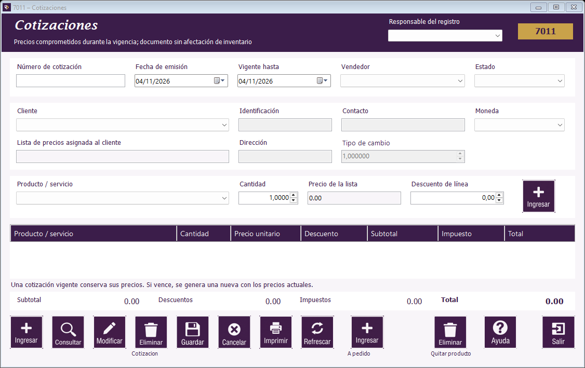

|   |
| |
Guía de Cotizaciones | Crear una cotización | Consultar, modificar y anular | Convertir una cotización a pedido | Botones de Cotizaciones | Mensajes frecuentes de Cotizaciones

Ubicación de los campos y del botón Ayuda en el formulario.
Una cotización es una propuesta de productos, precios y condiciones para un cliente. Guardarla no registra un pago.